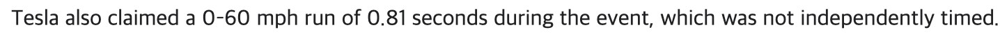

Tesla Roadster 발표 비공식 정리
보여준 것은 진짜 묘기,
남은 것은 약속
이번 행사의 숫자를 주장·시연·검증·보도로 나눠 읽습니다.
Tesla와 관계없는 비공식 정리입니다

이번 행사의 숫자를 주장·시연·검증·보도로 나눠 읽습니다.
첫 공개(2017-11-16)에서 이번 행사(2026-10-15)까지 3,255일
Tesla와 관계없는 비공식 정리입니다
2020년 출시 약속 주장
관객 앞에서 새 차 시연
2028년 주장, 가격·인도일은 발표 없음
2020년 출시 약속에서 2028년 생산 시작까지, 두 해를 뺀 값
회사나 발표자가 말한 값
2028년 생산 시작
관객 앞에서 보여 준 장면
차 5대 뛰어넘기
독립 측정이나 공식 기록
Model S Plaid 0-60
1.98초
(MotorTrend 측정)
언론 보도나 집계
생산 일정 최소 6번 연기 (Electrek 집계)
독립 계측 찾지 못함 (2026-10-19 기준)
숫자를 들으면 물어보세요: 누가 말했고, 무엇으로 확인했나?
경사로 천장에 매달렸다가 뒤집어 착지
테슬라 차 5대 시연 위를 뛰어넘으며 회전
0-60 mph 주행은 관객 앞에서. 시간은 테슬라 타이머 0.81초 주장
제자리 이륙, 회전, 착지. 이륙은 녹화 21:53 시연
탑승한 사람 0명 보도 (Electrek, CNN)
독립 계측
찾지 못함
(2026-10-19 기준) 보도
The Verge: “독립 시험으로 확인될 때까지 기다려야 한다”
0.81초 주장
생중계 주행 시간도 테슬라 타이머 값
NBC News: “according to Tesla”
The Verge: “the company claimed”

주장회사나 발표자가 말한 값검증독립 측정이나 공식 기록
모두 테슬라 발표 주장
| 항목 | 첫 공개 때 | 이번 발표 |
|---|---|---|
| 버전 | 기본형, Founders Series | Performance, Thrust, Rocket |
| 주행거리 | 620마일 | 300마일 이상 |
| 좌석 | 4인승 | 2인승 (Rocket 1인승) |
| 최고 속도 | 250 mph 이상 | 230 mph 이상 (Rocket, Tesla X 기준) |
| 0-60 mph | 1.9초 | 1.6초 미만 (Performance) |
| 가격 | $200,000 | 발표 없음 |
주장점: 약속한 해생산 일정 최소 6번 연기 (Electrek 집계) 보도
발표 없음
미발표, 생산만 2028년 주장
Rocket은 ‘공공도로 사용 승인 안 됨’
독립 계측 찾지 못함 (2026-10-19 기준) 보도
“전통 자동차 회사를 민망하게 만든 것 말고는 상업적 가치가 없는 엔지니어링 과시”
Gene Munster(Reuters 인용) “an engineering flex with no commercial value beyond embarrassing traditional car makers”
다음 소식에서는 세 가지를 확인하면 된다.
세 버전의 차값이 나오는가
다른 곳이 다시 재는가
말한 대로 2028년에 시작하는가
숫자를 들으면 물어보세요: 누가 말했고, 무엇으로 확인했나?
“이번 엔지니어링은 진짜다.”
Fred Lambert, Electrek “The engineering here is real.”
숫자 장부 전체: github.com/csm-kr/pt-maker-skill/tree/judged-deck/examples/tesla-roadster/4-judged
숫자를 들으면 물어보세요: 누가 말했고, 무엇으로 확인했나?
Tesla와 관계없는 비공식 정리입니다
숫자 장부와 원본: github.com/csm-kr/pt-maker-skill/tree/judged-deck/examples/tesla-roadster/4-judged
짧은 점프·회전·착지뿐, 오래 날지 않았다.
공기 추진 약 5초 주장: Thrust 버전 쿼터마일 주행
230 mph 이상 주장: Rocket 버전만
엔지니어: ‘지금은 214 mph’ 주장
행사(2026-10-15) 기준 아니다: Thrust 예약금 보도
첫 공개 때 Founders Series 가격 $250,000 주장
배터리 용량 미공개. 출력 1 MW 이상(1,500마력) 주장
.jpg){kind=link}